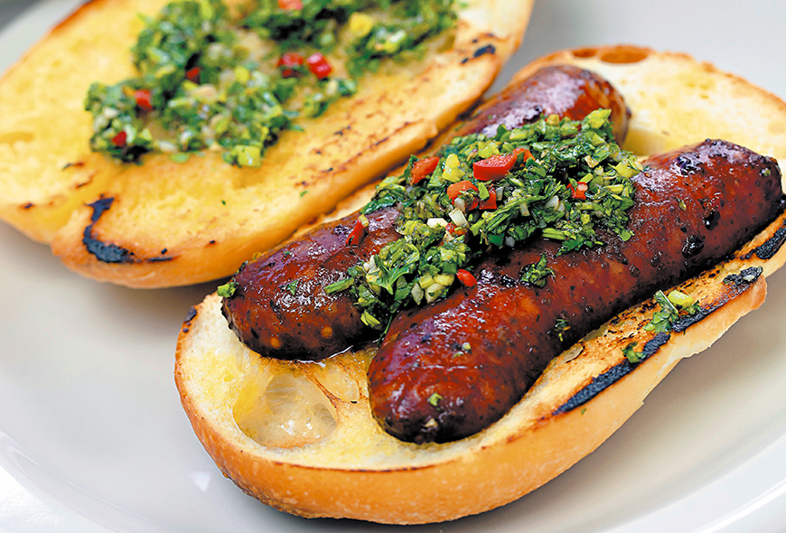

Home
How to make an argentinian Choripan

Description
This is easy top #1 in my ranking of argentinian dishes
We are going to teach you in a few steps how to cook this delicious traditional dish
Ingredients
Steps
- Add coal to the grill
- Cook the chorizos 20 minutes. You could use a fork to make little holes in them.
- Make sure it cooks both sides
- "Chorizo Mariposa": it's when you cut the chorizos in a vertical way.
- Open the baguettes in half, put them in the grill and make sure they are crusty
- PLace the chorizos in the crusty baguette and enjoy !